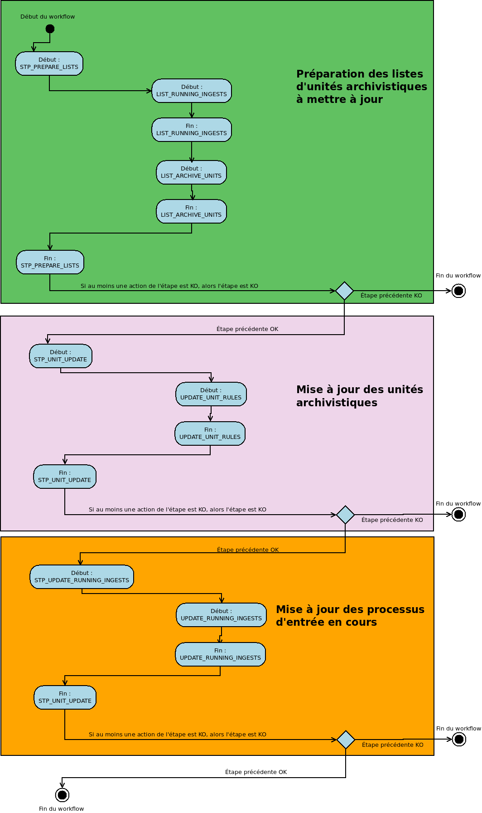

Workflow de mise à jour des règles de gestion des unités archivistiques¶
Introduction¶
Cette section décrit le processus (workflow) permettant la mise à jour des règles de gestion des unités archivistiques.
Le workflow mis en place dans la solution logicielle Vitam est défini dans le fichier “DefaultRulesUpdateWorkflow.json”. Ce fichier est disponible dans : sources/processing/processing-management/src/main/resources/workflows.
Processus de mise à jour des règles de gestion des unités archivistiques (vision métier)¶
Le processus de mise à jour des règles de gestion des unités archivistiques est lancé à la suite d’une mise à jour des règles de gestion lorsque la solution logicielle Vitam détecte qu’une règle de gestion a été modifiée et est utilisée par une ou plusieurs unités archivistiques. Toutes les étapes et actions sont journalisées dans le journal des opérations.
Les étapes et actions associées ci-dessous décrivent le processus de mise à jour (clé et description de la clé associée dans le journal des opérations).
Préparation des listes d’unités archivistiques à mettre à jour¶
- Étape 1 - STP_PREPARE_LISTS
Distribution sur REF -> GUID/PROCESSING/updatedRules.json
- Liste des entrées en cours d’exécution - LIST_RUNNING_INGESTS - fichier de sortie : GUID/PROCESSING/runningIngests.json
- Règle : vérification des entrées en cours d’exécution. Un fichier runningIngests.json est rempli avec les identifiants des entrées en cours. Le fichier est vide si aucune entrée n’est en cours.
- Statuts :
- OK : le fichier listant les entrées (qu’il soit vide ou non) a bien été créé (LIST_RUNNING_INGESTS.OK=Succès de l’établissement de la liste des processus d’entrée en cours).
- KO : la liste des entrées en cours n’a pas pu être récupéré, ou alors la liste des ingests n’a pas pu être enregistrée sur le workspace (LIST_RUNNING_INGESTS.KO=Échec de l’établissement de la liste des processus d’entrée en cours)
- FATAL : une erreur technique est survenue lors du listage des entrées (LIST_RUNNING_INGESTS.FATAL=Erreur fatale lors de l’établissement de la liste des processus d’entrée en cours)
- Liste des unités archivistiques à mettre à jour - LIST_ARCHIVE_UNITS - fichier de sortie : GUID/PROCESSING/auToBeUpdated.json
- Règle : Récupération de la liste des unités archivistiques à mettre à jour. Pour chaque unité archivisitique concernée, un fichier est créé et déposé sur le workspace pour pouvoir être traité plus tard dans le workflow.
- Statuts :
- OK : la liste des unités archivistiques à traiter a pu être créée. Les fichiers associés ont bien été créés (LIST_ARCHIVE_UNITS.OK=Succès lors de l’établissement de la liste des unités archivistiques à mettre à jour)
- FATAL : une erreur technique est survenue lors du listage des unités archivistiques (LIST_ARCHIVE_UNITS.FATAL=Erreur fatale lors de l’établissement de la liste des unités archivistiques à mettre à jour)
- Étape 2 - STP_UNIT_UPDATE
Distribution sur LIST GUID/UnitsWithoutLevel. Etape distribuée.
- Mise à jour des règles de gestion d’une unité archivistique - UPDATE_UNIT_RULES
- Règle : pour une unité archivistique, vérification des règles de gestion impactées et recalcul / mise à jour des dates de fin.
- Statuts :
- OK : l’unité archivistique a bien été mise à jour (UPDATE_UNIT_RULES.OK=Succès de la mise à jour des règles de gestion des unités archivistiques).
- KO : l’unité archivistique n’a pas été trouvée, ou n’a pas pu être mise à jour (UPDATE_UNIT_RULES.KO=Échec de la mise à jour des règles de gestion des unités archivistiques)
- FATAL : une erreur technique est survenue lors de la mise à jour de l’unité archivistique (UPDATE_UNIT_RULES.FATAL=Erreur fatale lors de la mise à jour des règles de gestion des unités archivistiques)
- Étape 3 - STP_UPDATE_RUNNING_INGESTS
Distribution sur REF GUID/PROCESSING/updatedRules.json.
- Mise à jour des entrées en cours - UPDATE_RUNNING_INGESTS
- Règle : pour une liste d’entrées en cours, vérification de la finalisation de chaque entrées puis vérification des règles de gestion impactées, et recalcul / mise à jour des dates de fin. Fichier d’entrée : GUID/PROCESSING/runningIngests.json
- Statuts :
- OK : les entrées en cours ont été finalisées, et les unités archivistiques ont bien été mises à jour (STP_UPDATE_RUNNING_INGESTS.OK=Succès du processus de mise à jour des entrées en cours).
- KO : un problème a été rencontré avec le fichier des règles de gestion mises à jour (STP_UPDATE_RUNNING_INGESTS.KO=Échec du processus de mise à jour des entrées en cours)
- FATAL : une erreur technique est survenue lors de la mise à jour des processus d’entrées (STP_UPDATE_RUNNING_INGESTS.FATAL=Erreur fatale lors du processus de mise à jour des entrées en cours)
D’une façon synthétique, le workflow est décrit de cette façon :
Diagramme d’activité du workflow de mise à jour des règles de gestion